The Languages of Bardon
An alphabetical listing of the various languages into which Bardon's books have been translated, as well as their publishers and international availability.
English
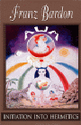
1. Franz Bardon:
Initiation into Hermetics
ISBN 1-885928-06-8
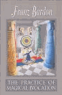
2. Franz Bardon:
The Practice of Magical Evocation
ISBN 1-885928-13-0
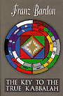
3. Franz Bardon:
The Key to the True Kabbalah
ISBN 1-885928-05-X
4. Franz Bardon:
Frabato the Magician
ISBN 1-885928-03-3
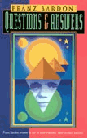
5. Dieter Rüggeberg:
Questions & Answers
ISBN 1-885928-11-4
Publisher / Distributor:
Merkur Publishing Inc.
G. Hansville
P.O.Box 171306
Salt Lake City, Utah 84117 - USA
Tel. + Fax: 801 - 272 - 9008
E-mail: merkurbook@aol.com
www.merkurpublishing.com
Distributors:
Faulks Books
P.O Box 23
Bungay NR35 2SB England
Telephone\Fax +44 (0)1986 895434
Email: Info@faulksbooks.co.uk
www.faulksbooks.co.uk
Australia / Pacific Rim
Symbolic Journey
Shop 3, 36 Sunshine Beach Road
Noosa Junction Qld 4567
Ph: +61 7 54 480 166
Email: enquiries@symbolicjourney.com.au
www.symbolicjourney.com.au
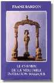
1. Franz Bardon:
Le chemin de la véritable initiation magique
ISBN - 2-9501459-4-9
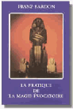
2. Franz Bardon:
La pratique de la magie évocatoire
ISBN 2-9501459-5-7
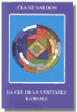
3. Franz Bardon:
La Clé De La Véritable Kabbale
ISBN 2-9501459-3-0
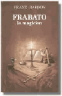
4. Franz Bardon:
Frabato le magicien
ISBN 3-921338-09-3
\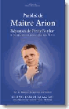
5. Dieter Rüggeberg:
Paroles de Maître Arion
ISBN ???
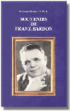
6. Dr. Lumir Bardon / Dr. M.K.:
Souvenirs de Franz Bardon
ISBN 3-921338-19-0
Publisher / Distributor:
Alexandre Moryason - Éditeur
B.P. 175
F- 92406 Courbevoie Cedex
Frankreich / France
Fax: 01 - 43 33 39 86
Email: commande@moryason.com
www.moryason.com
Czech
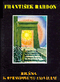
1. Franz Bardon:
BRÁNA KOPRAVDOVÉMU ZASVŒNÍ
ISBN 80-86183-01-7
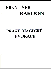
2. Franz Bardon:
PRAXE MAGICKÉ EVOKACE
ISBN 80-86183-03-3
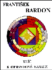
3. Franz Bardon:
KLÍ„ K OPRAVDOVÉ KABALE
ISBN 80-86183-02-5
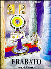 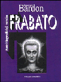
4. Franz Bardon:
FRABATO
ISBN 80-86183-07-6
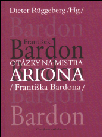
5. Dieter Rüggeberg:
Otázky na Mistra Ariona (Františka Bardona)
ISBN 80-86183-14-5
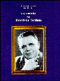
6. Dr. Lumir Bardon / Dr. M.K.:
Vzpomínky na Františka Bardona
ISBN 80-901939-0-0
Publisher:
CHVOJKOVO NAKLADETELSTVI
Jiri Chvojka
Machova 22
12000 Praha, CR
Tel. 9003 2662
German
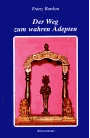
1. Franz Bardon:
Der Weg zum wahren Adepten
ISBN 3-921338-30-1
2. Franz Bardon:
Die Praxis der magischen Evokation
ISBN 3-921338-31-X
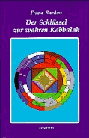
3. Franz Bardon:
Der Schlüssel zur wahren Kabbalah
ISBN 3-921338-27-1
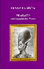
4. Franz Bardon:
Frabato
ISBN 3-921338-26-3
5. Dieter Rüggeberg (Hg.):
Fragen an Meister Arion (Franz Bardon)
ISBN 3-921338-24-7
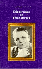
6. Dr. Lumir Bardon, Dr. M.K.:
Erinnerungen an Franz Bardon
ISBN 3-921338-18-2
Publisher / Distributor:
Verlagsbuchhandlung Dieter Rüggeberg
P.O.Box 130844 D-42035 Wuppertal
Tel. + Fax: (049) 0202 - 59 28 11
Email: Vrggeberg@aol.com
www.magie-info.de
Hungarian
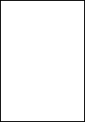
1. Franz Bardon:
AZ IGAZI BEAVATÁS ÚTJA
ISBN 963-03-7416-1
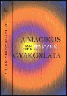
2. Franz Bardon:
A MÁGIKUS IDÉZÉS GYAKORLATA
ISBN 963-00-6867-2
4. Franz Bardon:
FRABATO
ISBN 963-03-8490-6
Publisher / Distributor:
Zsuzsánna Déri
Béke u. 166
H-2519 Piliscsév
Tel. 33 - 472513
Italian
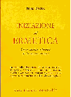
1. Franz Bardon:
Iniziazione all'ermetica
ISBN ???
Publisher / Distributor:
Casa editrice
"Astrolabio"
Ubaldini Editore
Via Guido d'Arezzo, 16
00198 Roma
FAX: 068552756
Portuguese
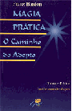
1. Franz Bardon:
MAGIA PRÁTICA -- O Caminho do Adepto
ISBN 85-7187-117-5
Publisher / Distributor:
Editora Ground Ltda.
Rua Lacedemonia, 68
04634-020 Sao Paulo - Brasil
Tel. (011) 5031 1500
Fax: (011) 5031 3462
Email: vendas@ground.com.br
www.ground.com.br
Spanish
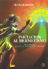
1. Franz Bardon:
INICIACION AL HERMETISMO
ISBN 84-87476-77-5
2. Franz Bardon:
La práctica de la evocación mágica
ISBN 84-87476-68-6
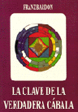
3. Franz Bardon:
LA CLAVE DE LA VERDADERA CÁBALA
ISBN 84-87476-53-8
4. Franz Bardon:
FRABATO EL MAGO
ISBN 84-87476-71-6
Publisher / Distributor (Spain):
Editorial Mirach, S.L.
Apartado de Correos 77
28670 Villaviciosa de Odón
(Madrid) Spanien
Tel. + Fax: 91 - 593 37 35
Distributor (Americas):
Merkur Publishing Inc.
P.O.Box 171306
Salt Lake City, Utah 84117 - USA
Tel. + Fax: 801 - 272 - 9008
E-mail: merkurbook@aol.com
www.merkurpublishing.com
Russian
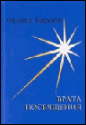 
1. Franz Bardon:
ISBN 5-86708-152-4
4. Franz Bardon:

ISBN 5-94656-030-1
Publisher / Distributor:
Publishing House "Petropolis" Ltd.
7 Souza Pechatnikov Str.
190121 St. Petersburg
Tel. 812 - 323 5921
Fax: 812 - 113 7129
E-mail: ppolis@lek.ru